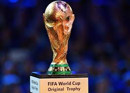

Футбол - ккомандный вид спорта, в котором целью являетсязабить мяч в ворота соперника ногами или другими частями тела(кроме рук) большее количество раз, чем команда соперника.
Есть 17 официальных правил игры, каждое из которых содержит список оговорок и руководящих принципов. Эти правила предназначены для применения на всех уровняхфутбола, хотя есть некоторые изменения для таких групп, как юниоры, взрослые, женщиныи люди с ограниченными физическими возможностями. Законы очень часто формклировались в общих чертах, которые позволяют упростить их применения в зависимости от характера игры.